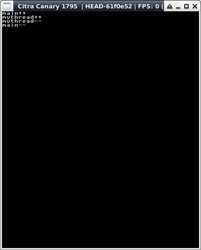

參考資訊：
https://libctru.devkitpro.org/index.html
https://github.com/devkitPro/3ds-examples
main.c
#include <stdio.h>
#include <3ds.h>
#include <SDL.h>
static int mythread(void *args)
{
printf("%s++\n", __func__);
SDL_Delay(1000);
printf("%s--\n", __func__);
return 0;
}
int main(void)
{
int ret = 0;
gfxInitDefault();
consoleInit(GFX_TOP, NULL);
printf("%s++\n", __func__);
SDL_Thread *thread = SDL_CreateThread(mythread, NULL);
SDL_WaitThread(thread, &ret);
printf("%s--\n", __func__);
gfxExit();
return 0;
}
完成
